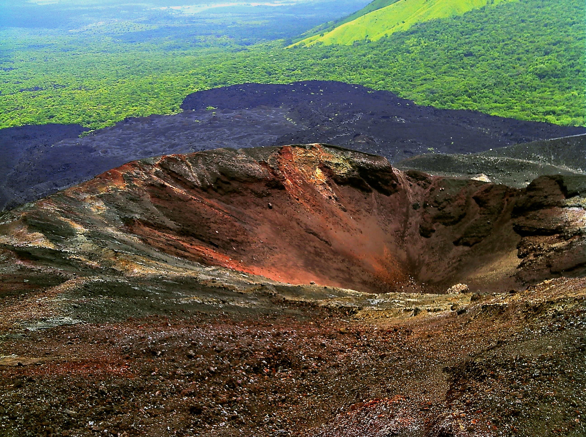
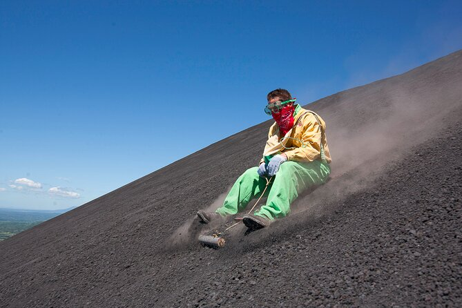
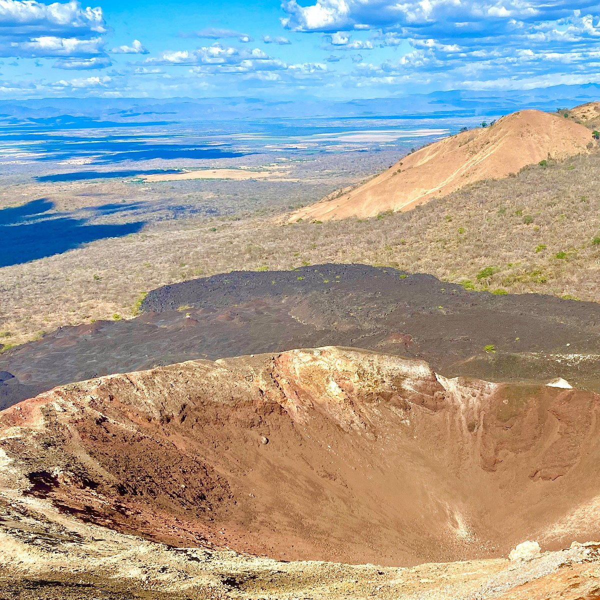

Volcán Cerro Negro
LeónEl volcán más joven de Centroamérica. Su ladera de ceniza suelta es la pista perfecta para hacer Volcano Boarding a velocidades de hasta 60 km/h.
ClimaCálido y seco (30°C – 35°C)
Acceso45 min en 4x4 desde León
CostoTours $25 – $35
Lo que debés hacer:

Sandboarding volcánico
Descenso a alta velocidad en tabla por la ladera negra.

Trekking al Cráter
Caminata por la cumbre observando fumarolas de azufre.